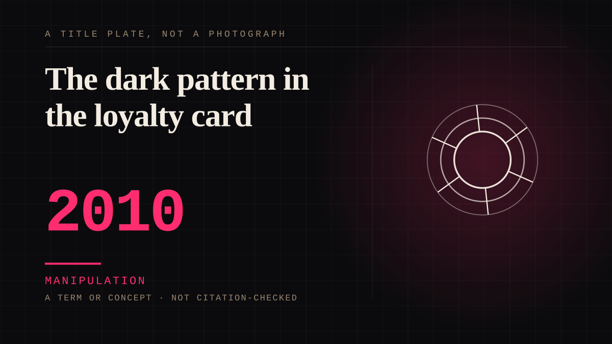

A term or concept · 2010 · Platforms
The dark pattern in the loyalty card
Exploiting the sunk cost of an earned balance: expiry, devaluation, tier demotion, and the deliberate design of loss.

Everything the field calls manipulation, expressed in the vocabulary of retail. The expiry date on a points balance is a grief event with a date on it, and it is engineered to occur annually.
Manipulation. One-sided attachment engineered for somebody else's benefit. Paid intimacy, parasocial persuasion, sasaeng, grief extraction, the streak. The lane that pays the bills and the lane that causes the most harm, frequently at the same time.
Where it sits
2010 2010+ · 2010 2026
Provenance · 10 source record(s)
- retrievableTHE SUNK COST FALLACY, NAMED AS A DESIGN TECHNIQUE. 'Hidden Costs' reveals new charges immediately before purchase; the paper states this exploits the sunk cost fallacy - users feel so invested they justify the extra charge to avoid wasting their effort. The loyalty card is thisMathur, A., Acar, G., Friedman, M. J., Lucherini, E., Mayer, J., Chetty, M., & Narayanan, A. (2019). Dark Patterns at Scale: Findings from a Crawl of 11K Shopping Websites. Proceedings of the ACM on Human-Computer Interaction, 3(CSCW), Article 81. ↗
- retrievableThe asymmetry, stated as a category: it is easy to sign up for recurring subscriptions and memberships, but hard to cancel - the paper defines Hidden Subscription and finds it frequently co-occurring with a barrier on the way out.Mathur, A., Acar, G., Friedman, M. J., Lucherini, E., Mayer, J., Chetty, M., & Narayanan, A. (2019). Dark Patterns at Scale. Proceedings of the ACM on Human-Computer Interaction, 3(CSCW), Article 81. ↗
- unverifiedThe category system this entry uses to say 'dark pattern' at all: Gray et al. (2018) is the taxonomy of dark patterns the later literature adopts.Gray, C. M., Kou, Y., Battles, B., Hoggatt, J., & Toombs, A. L. (2018). The Dark (Patterns) Side of UX Design. Proceedings of the 2018 CHI Conference on Human Factors in Computing Systems. ↗
- unverifiedThe origin and the figure: 'Hard to Cancel', found on 31 websites - and the Roach Motel, the name the category came from.Brignull, W. & Oxford, R. The Roach Motel: Why Most Online Cancellation Flows Are Too Complex.
- retrievableScale, and the part that indicts the industry: 1,818 dark pattern instances across 15 types and 7 categories on 1,254 of ~11,000 shopping websites (11.1%), with 234 instances on 183 websites exhibiting deceptive behaviour. More popular sites were MORE likely to feature them. And 22 third-party entities sell dark patterns as a turnkey solutionMathur et al. (2019). Dark Patterns at Scale. ↗
- retrievableHow hard: unsubscribing from Bloomberg took TEN clicks and required launching and conversing with a closed-domain chatbot first. Cancelling required entering first and last name into the chatbot welcome page, declining discount offers, answering a question to confirm, and completing a mandatory exit surveyStaying at the Roach Motel: Cross-Country Analysis of Manipulative Subscription and Cancellation Flows (2024). ↗
- unverifiedConfirmation as a toll: The Daily Wire required a three-question mandatory survey AND typing the word 'CONFIRM' to cancel. The authors concede some friction prevents accidents, and note that requiring a typed phrase appears unnecessaryStaying at the Roach Motel (2024). ↗
- retrievableThe harm is process harm: study of 53 Indian apps found 52 carried at least one deceptive pattern and e-commerce ran 5.3 per app against 2.7 across sectors, and argues the resulting regret is PROCESS regret from a bad decision procedure, not outcome regret from a bad product - which is why satisfaction metrics miss itDark Patterns in Indian E-Commerce Interfaces and Consumer Purchase Regret. Research Review Journal of Social Science. ↗
- unverifiedNamed inside a compound citation that also named the work cited separately on this entry, which carries its own locator. This one is recorded on its own so that a single string is not standing in for several works. It has not been identified here - no title, no venue, no locator - and nothing is claimed about what it says. The string it came from is kept in
split_fromso the compound is still on the record.State of California. California Consumer Privacy Act (CCPA), as amended by the California Privacy Rights Act (amendments effective 2023). Office of the Attorney General. ↗ - unverifiedNamed inside a compound citation that also named the work cited separately on this entry, which carries its own locator. This one is recorded on its own so that a single string is not standing in for several works. It has not been identified here - no title, no venue, no locator - and nothing is claimed about what it says. The string it came from is kept in
split_fromso the compound is still on the record.European Union. Regulation (EU) 2022/2065, Digital Services Act (2022). European Commission. ↗
Connected · 3 out, 3 in
The supermarket clubdepicts · 1982 · A mechanism or tacticThe free trialdepicts · 2015 · A mechanism or tacticThe recurring deliverycites · 2010 · A mechanism or tacticThe recurring deliverycites · 2010 · A mechanism or tacticThe free trialdepicts · 2015 · A mechanism or tacticThe supermarket clubdepicts · 1982 · A mechanism or tactic
It sits in